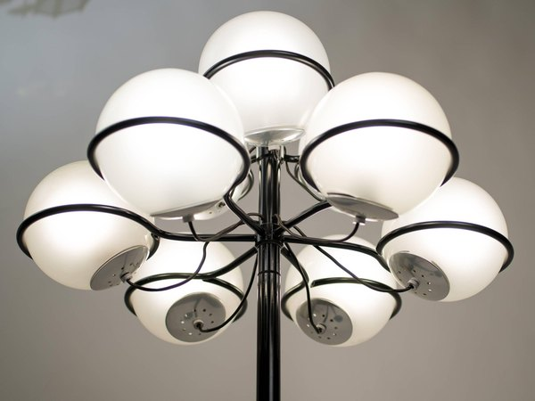
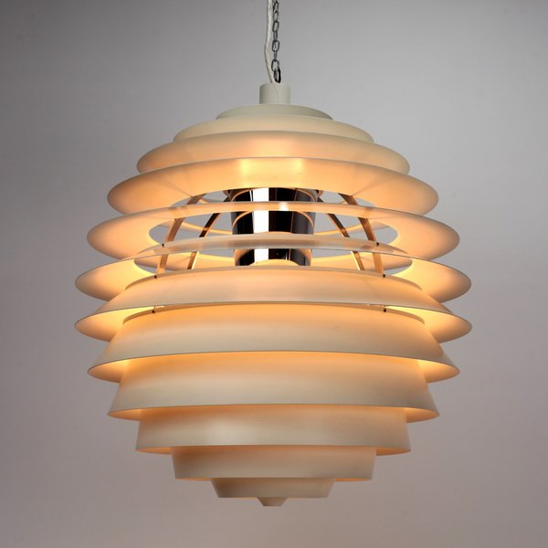

CRVI002429Unattributed - We Live In Time Kitchen Timer
2024
2024

CRVI002430Unattributed - Stacked 'A24' Hat

CRVI002431Unattributed - Marty Supreme Basketball
2025
2025

CRVI002432Unattributed - Marty Supreme Tennis Balls
2025
2025

CRVI002721Gino Sarfatti - Table lamp, model 534
1951
1951

CRVI002722Gino Sarfatti - Floor lamp, model 1094

CRVI002723Poul Henningsen - PH 5 pendant
1958
1958

CRVI002724Poul Henningsen - PH Kontrast pendant

CRVI002725Poul Henningsen - PH 3/2 table lamp

CRVI002726Poul Henningsen - PH 5 pendant (lilac)
1958
1958

CRVI002727Poul Henningsen - PH Louvre pendant

CRVI002730Aldo van den Nieuwelaar - TC6 lamp
1972
1972

CRVI002731Donald Deskey - Table Lamp
1927
1927